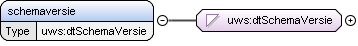

Element uws:schemaversie
| Namespace | https://standaarden.overheid.nl/stop/imop/uitwisseling/ | ||
| Definitie |
Het versienummer van het Implementatiemodel Officiële Publicaties (IMOP) waarmee de XML-serialisatie is gemaakt. Het versienummer voldoet aan de semver standaard. De algemene vorm is major.minor.patch-label, waarbij het label gedeelte optioneel is en voor elke major.minor versie hooguit één versie met een label bestaat. De |
||
| Informatiemodel | Implementatieversie (eigenschap van Implementatiemodel Officiële Publicaties) | ||
| Diagram |

|
||
| Type | Simple Type uws:dtSchemaVersie | ||
| Eigenschappen |
|
||
| Gebruikt door |
|
||
| Beperkingen |
|